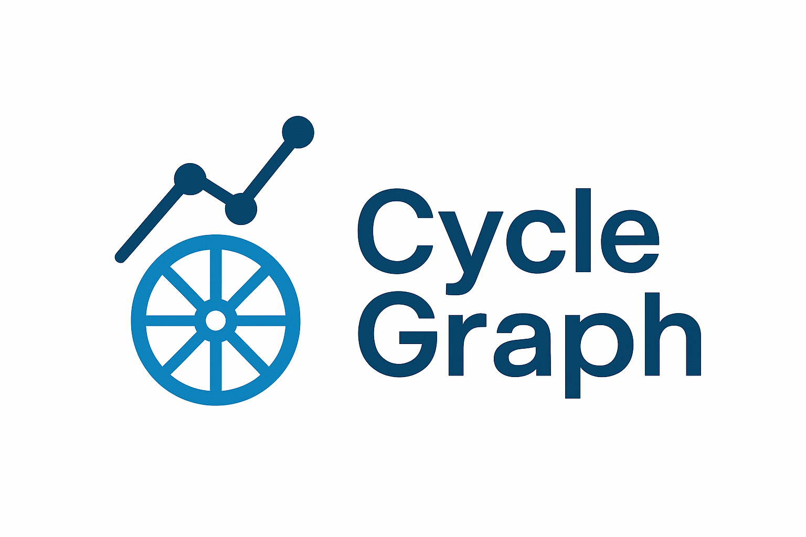

CycleGraph (beta)
Presise treningsinnsikter fra watt, puls og vær
Flaggskipet vårt, Precision Watt, kombinerer værdata og analyse for å gi en mer realistisk watt. Perfekt for mosjonister og seriøse amatører.
MVP lanseres snart.
Gi meg beskjed ved lanseringKontakt: Johnny Strømø · 483 10 333 · jstromo83@gmail.com · Horten